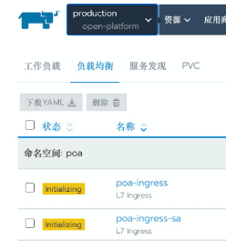
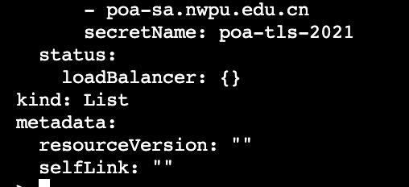
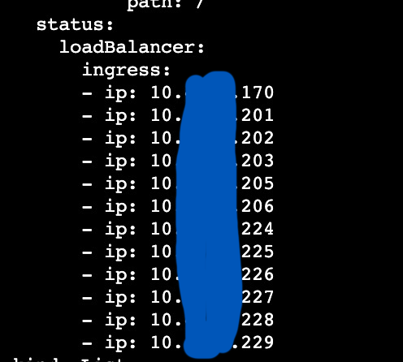
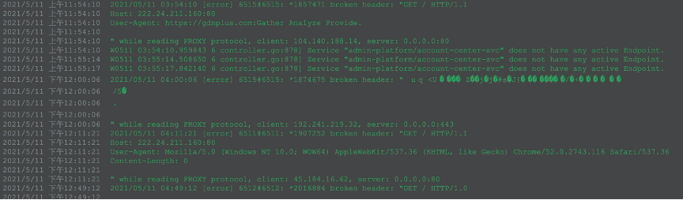
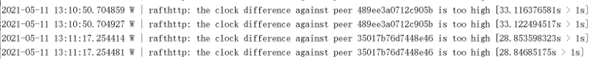
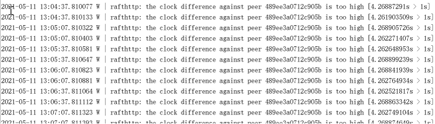

排查Ingress对象status字段不更新的问题
现象
在rancher中发现所有的Ingress都是黄色的Initializing状态，但是访问应用没有问题。

检查ingress对象
查看ingress的status，会看到status.loadBalancer 字段是空的：

对比一个正常：

查看Nginx ingress的日志
在三个Pod（共10个）上看到了以下日志：

怀疑受到攻击，导致nginx-ingress-controller异常。
尝试重启Ingress controller
删掉这三个Pod重启，没用。
重启所有ingress-controller，也没用。
观察master服务器上etcd的日志
在master-1上看到如下内容：

在master-2上看到如下内容：

master-3上没有这些warning。
因为K8S对象都保存在etcd中的，怀疑如果etcd出了问题，那么对象的状态是过时的，也会造成无法更新的问题。
校准服务器时间，问题依旧。
检查Ingress Controller和kube apiserver的通信
K8S的Controller模型告诉我们，都必须和Apiserver通信，那么是不是Ingress Controller和Apiserver的通信出了问题呢？
进入某个ingress controller容器，执行下列命令：
TOKEN=`cat /var/run/secrets/kubernetes.io/serviceaccount/token`
curl -k https://10.43.0.1:443/api --header "Authorization: Bearer $TOKEN"
发现和API Server的通信是OK的。
检查Ingress Controller的Service Account的权限是否足够
因为调用Kube ApiServer需要权限，检查一下：
> kubectl -n ingress-nginx get sa
NAME SECRETS AGE
default 1 440d
nginx-ingress-serviceaccount 1 440d
> kubectl -n ingress-nginx get rolebinding
NAME AGE
clusterrolebinding-2ltlc 440d
clusterrolebinding-6sk8h 440d
clusterrolebinding-964mz 440d
clusterrolebinding-znvvl 440d
nginx-ingress-role-nisa-binding 440d
> kubectl -n ingress-nginx get rolebinding nginx-ingress-role-nisa-binding
…
roleRef:
apiGroup: rbac.authorization.k8s.io
kind: Role
name: nginx-ingress-role
subjects:
- kind: ServiceAccount
name: nginx-ingress-serviceaccount
namespace: ingress-nginx
> kubectl -n ingress-nginx get role nginx-ingress-role -o yaml
…
rules:
- apiGroups:
- ""
resources:
- configmaps
- pods
- secrets
- namespaces
verbs:
- get
- apiGroups:
- ""
resourceNames:
- ingress-controller-leader-nginx
resources:
- configmaps
verbs:
- get
- update
- apiGroups:
- ""
resources:
- configmaps
verbs:
- create
- apiGroups:
- ""
resources:
- endpoints
verbs:
- get
发现权限是足够的，而且和一个正常的集群对比，结果也是一样的。
再次观察ingress controller的日志
调整ingress controller的参数，把access log关掉，能够更清楚的看到controller的日志。
发现这么一条：
I0512 03:52:31.256060 6 status.go:86] new leader elected: nginx-ingress-controller-qxlt8
所有ingress-controller推举leader为 nginx-ingress-controller-qxlt8。
但是在K8S里根本就不存在名字是这个的Pod。
阅读源码得知，只有leader才会负责更新Ingress对象的status字段。
查找 nginx-ingress-controller-qxlt8
怀疑是不是etcd里有，但是这个没有K8S查不到，于是到etcd上查询。
> docker exec -it etcd etcdctl get / --prefix --keys-only | grep ingress-controller
/registry/configmaps/ingress-nginx/ingress-controller-leader-nginx
/registry/configmaps/kube-system/rke-ingress-controller
/registry/controllerrevisions/ingress-nginx/nginx-ingress-controller-544c7854f8
/registry/controllerrevisions/ingress-nginx/nginx-ingress-controller-668ccb87b6
/registry/controllerrevisions/ingress-nginx/nginx-ingress-controller-678b59dd78
/registry/controllerrevisions/ingress-nginx/nginx-ingress-controller-6c4d466577
/registry/controllerrevisions/ingress-nginx/nginx-ingress-controller-7577d75bc9
/registry/controllerrevisions/ingress-nginx/nginx-ingress-controller-767b694845
/registry/controllerrevisions/ingress-nginx/nginx-ingress-controller-779b9c5dc8
/registry/controllerrevisions/ingress-nginx/nginx-ingress-controller-7854ff6b8d
/registry/controllerrevisions/ingress-nginx/nginx-ingress-controller-7f8fdf4c75
/registry/controllerrevisions/ingress-nginx/nginx-ingress-controller-8446bfc58
/registry/controllerrevisions/ingress-nginx/nginx-ingress-controller-9cc858b66
/registry/daemonsets/ingress-nginx/nginx-ingress-controller
/registry/jobs/kube-system/rke-ingress-controller-deploy-job
/registry/pods/ingress-nginx/nginx-ingress-controller-2f6nf
/registry/pods/ingress-nginx/nginx-ingress-controller-2zk9s
/registry/pods/ingress-nginx/nginx-ingress-controller-6lzr4
/registry/pods/ingress-nginx/nginx-ingress-controller-c9gxl
/registry/pods/ingress-nginx/nginx-ingress-controller-fj94z
/registry/pods/ingress-nginx/nginx-ingress-controller-gstz8
/registry/pods/ingress-nginx/nginx-ingress-controller-kks2w
/registry/pods/ingress-nginx/nginx-ingress-controller-ntmqm
/registry/pods/ingress-nginx/nginx-ingress-controller-qjwkw
/registry/pods/ingress-nginx/nginx-ingress-controller-rfbls
/registry/pods/ingress-nginx/nginx-ingress-controller-rt5bp
/registry/pods/ingress-nginx/nginx-ingress-controller-xjcgl
/registry/pods/kube-system/rke-ingress-controller-deploy-job-2vmwq
没有 nginx-ingress-controller-qxlt8 这个Pod。
但是注意到 configmap ingress-controller-leader-nginx。
打开之后看到：
apiVersion: v1
kind: ConfigMap
metadata:
annotations:
control-plane.alpha.kubernetes.io/leader: '{"holderIdentity":"nginx-ingress-controller-qxlt8","leaseDurationSeconds":30,"acquireTime":"2021-05-10T13:38:53Z","renewTime":"2021-05-12T06:28:50Z","leaderTransitions":11}'
creationTimestamp: "2020-02-26T10:37:12Z"
name: ingress-controller-leader-nginx
namespace: ingress-nginx
resourceVersion: "230445553"
selfLink: /api/v1/namespaces/ingress-nginx/configmaps/ingress-controller-leader-nginx
uid: 14a0deec-eab4-44d1-aff1-36979b52a1e1
这个configmap是ingress-controller维护的，目前的值显然是错了。
再次研究ingress-controller的leader推举机制
查了代码之后发现，ingress-controller其实并不是想象中的分布式共识协议推举leader，而是最简单的抢座位的方式来定leader。
只要有一个controller在其他controller之前占有锁（就是前面提到的configmap），并且在lease之前（30秒）刷新这个锁，那它就是leader。
而且只有leader才会负责更新Ingress对象的status字段。
手动修改configmap
手动修改configmap，把leader指向一个存在的Pod。
所有Ingress上的status字段状态都更新了。
排查游离在K8S集群之外的节点
现在可以推断存在游离在K8S集群之外，但是可以和K8S通信的服务器，后来果然在一台不在集群范围内的机器上找到了：
$ docker ps -a|grep ingress
...
f4c861555842 a80ffa0b898e "/usr/bin/dumb-init …" 5 months ago Up 5 months k8s_nginx-ingress-controller_nginx-ingress-controller-qxlt8_ingress-nginx_40487677-32c0-4936-bd1a-3e3cb99fbfa1_0
...
印证了之前的推断。
把这台服务器上的kubelet、kube-proxy和ingress-controller容器停掉。
总结
本次排查发现三个问题：
-
Ingress对象的status字段不更新的问题。
-
问题1产生的原因可能是，存在游离在K8S集群之外，但是可以和K8S通信的服务器。
-
集群的nginx接入点疑似收到攻击。